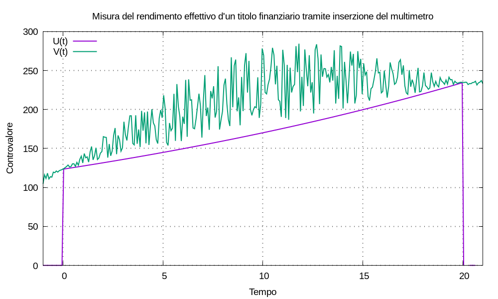

La risposta del multimetro a un singolo versamento all’istante t0 si scrive:
U(t) = C0 u(t - t0) esp[λ (t - t0)]
supponiamo di conoscere la tupla di valori, con t0 < t1:
{ (t0; C0), (t1; U(t1)) }
possiamo calcolare la remunerazione:
U(t1) = U(t0) u(t1 - t0) esp[λ (t1 - t0)] = U(t0) esp[λ (t1 - t0)]
⇒ U(t1) ÷ U(t0) = esp[λ (t1 - t0)]
⇒ log[U(t1) ÷ U(t0)] = λ (t1 - t0)
⇒ λ = log[U(t1) ÷ U(t0)] ÷ (t1 - t0)
⇒ λ = [log U(t1) - log U(t0)] ÷ (t1 - t0)
Ora immaginiamo un titolo finanziario pincopalla, di controvalore V(t), di cui sia nota la tupla di valori:
{ (t0; V(t0)), (t1; V(t1)) }
per esempio, se pincopalla è quotato in borsa: i prezzi di chiusura d’ogni giornata di contrattazione sono di dominio pubblico. Utilizziamo il multimetro applicandogli la movimentazione:
M(t) = V(t0) δ(t - t0)
generando la risposta del multimetro:
U(t) = V(t0) u(t - t0) esp[λ (t - t0)]
risulta U(t0) = V(t0); aggiungiamo la condizione U(t1) = V(t1).
Osservazione Pur non essendo strettamente necessario, se fa comodo per organizzare le idee: è possibile definire la condizione aggiuntiva come U(t1-) = V(t1) e parte della movimentazione, aggiungendo un movimento di liquidazione totale:
M(t) = U(t0) δ(t - t0) - U(t1-) δ(t - t1) = V(t0) δ(t - t0) - V(t1) δ(t - t1)
Calcoliamo la remunerazione del multimetro e consideriamola anche come remunerazione di pincopalla:
λpincopalla = [log V(t1) - log V(t0)] ÷ (t1 - t0)
facciamo un esempio numerico:
λpincopalla = (log 234,56 - log 123,45) ÷ (20 - 0) ≈ 0,0320937601453549
cioè il multimetro misura un tasso d’interesse composto annuale:
Jpincopalla = expm1(λpincopalla) ≈ 3,26%

Ripetiamo il ragionamento per il titolo pizzaefichi, di controvalore W(t), di cui sia nota la tupla di valori:
{ (t0; W(t0)), (t1; W(t1)) }
definiamo la movimentazione:
M(t) = W(t0) δ(t - t0) - W(t1) δ(t - t1)
e applichiamola a un multimetro per calcolare la remunerazione di pizzaefichi:
λpizzaefichi = [log W(t1) - log W(t0)] ÷ (t1 - t0)
facciamo un esempio numerico:
λpizzaefichi = (log 345,67 - log 234,56) ÷ (20 - 0) ≈ 0,019388657200908942
cioè il multimetro misura un tasso d’interesse composto annuale:
Jpizzaefichi = expm1(λpizzaefichi) ≈ 1.96%
Abbiamo usato il multimetro per calcolare la figura di merito remunerazione dei due titoli relativa a uno specifico intervallo di tempo; possiamo denominare la figura di merito tasso d’interesse composto annuale, calcolata come descritto, come rendimento effettivo dei titoli stessi, indicandolo con η = J. Possiamo quindi confrontare fra loro i titoli finanziari in termini di rendimento effettivo (qualunque cosa ciò significhi): per gli esempi risulta ηpincopalla > ηpizzefichi.
Osservazione È chiaro come il rendimento effettivo misurato con questo metodo dipenda dalla scelta dei due istanti nel tempo in cui rilevare il controvalore del titolo finanziario oggetto d’analisi.
Se stiamo analizzando un investimento già accaduto: acquisto e liquidazione sono già accaduti, in certi istanti, con certi valori di controvalore; perciò il calcolo ha senso.
Se stiamo analizzando un ipotetico investimento con istanti d’acquisto e liquidazione da determinare: occorre usare metodi piú evoluti per stimare un intervallo dei possibili valori di rendimento effettivo che sia piú descrittivo dei possibili scenari.
Uno dei possibili utilizzi del rendimento effettivo è l’analisi d’un portafoglio finanziario variegato sostituendo ogni titolo in portafoglio con l’equivalente multimetro impostato con remunerazione λ = log1p(η). In questo modo: il controvalore d’ogni titolo è una funzione esponenziale, il che rende piú facile una varietà di calcoli.